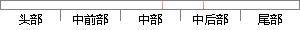

localhost”为 后缀的域名出现最多。
片段位置图

相似结果|
1
原句片段：localhost”为 后缀的域名出现最多。
相似片段 1：然后将http://改成 ? http://localhost/ ?...您举报文章:wampserver打开localhost显示域名重定向怎么...原因补充: (最多只允许输入30个字)...
相似片段 2：标签:至少1个,最多5个 开发语言 平台框架 服务...论怎么更新缓存和生成文件都无法改变栏目url中的域名...用来替换url中的localhost,原理很简单,这里贴出来,...
相似片段 3：知道多世界 知道非遗 用户 知道芝麻 知道之星 芝麻将 芝麻团 知道行...为您推荐: 其他类似问题2014-02-06 安装完wampserver后单击localhost出现域名重....
相似片段 4：localhost 这个是本机地址嘛。当然要过滤本机带来的...2012-06-06 我网站的cnzz数据统计里,出现这样的...在cnzz统计里面可以把自己的新浪博客的设置为域名可以...
相似片段 5：是在这行下添加新行,将localhost修改为想要的域名...Hosts是一个没有扩展名的系统文件,可以用记事本等工具...原因补充: (最多只允许输入30个字)...
|
※ 片段修改建议 ※
近似词参考：- 出现：呈现 泛起 涌现
- 最多：至多
系统自动生成语句：localhost”为 后缀的域名呈现至多。
注：本片段修改建议为系统自动生成，仅供参考。